erDiagram
catergories ||--|{ product : has
manufacturers ||--|{ product : has
catergories {
int id
text name
}
manufacturers {
int id
text name
text country
}
product {
int id
int category_id
int manufacturer_id
text name
}
33 Генетический алгоримт. Материализованные представления
Хранилище данных (data warehousing) — это подход к интеграции данных из множества, возможно, очень больших, распределённых и неоднородных баз данных и других источников информации. Хранилище данных (DW) представляет собой репозиторий (хранилище) интегрированной информации, доступной для запросов и анализа. Чтобы избежать обращения к исходным источникам данных и повысить эффективность выполнения запросов к DW, некоторые промежуточные результаты обработки запросов сохраняются в самом хранилище. Эти промежуточные результаты называются материализованными представлениями (materialized views). На достаточно абстрактном уровне хранилище данных можно рассматривать как набор материализованных представлений над данными, извлечёнными из распределённых неоднородных баз данных. Существует множество исследовательских задач, связанных с DW, среди которых одной из самых сложных является задача выбора материализованных представлений. С одной стороны, материализованные представления ускоряют обработку запросов. С другой – они требуют обновления при изменениях в источниках данных. Следовательно, при выборе материализованных представлений необходимо учитывать две категории затрат: затраты на обработку запросов и затраты на обслуживание (обновление) материализованных представлений. Нас интересует следующий вопрос: какие представления следует материализовать, чтобы сумма затрат на выполнение запросов и обслуживание представлений была минимальной?
Выбор материализованных представлений представляет собой сложный компромисс между производительностью выполнения запросов и затратами на обслуживание.
- Материализация всех представлений в хранилище данных (DW) обеспечивает наилучшую производительность, но сопровождается наивысшими затратами на обслуживание представлений.
- Оставление всех представлений виртуальными приведёт к минимальным затратам на их обслуживание, но к худшей производительности запросов. Под “виртуальными” в данном контексте подразумевается, что никакие промежуточные результаты не сохраняются в хранилище данных.
- Возможен также смешанный подход, при котором часть представлений материализуется (например, те, которые используются совместно), а остальные остаются виртуальными. Таким образом можно достичь оптимального (или близкого к оптимальному) баланса между приростом производительности и затратами на обслуживание.
К сожалению, доказано, что задача проектирования выбора материализованных представлений является NP-трудных. Поэтому на практике приходится использовать эвристику для нахождения приближённого к оптимальному решения. Задача, рассматриваемая в далее, формулируется следующим образом: на основе множества часто используемых запросов к хранилищу данных (DW) необходимо выбрать набор представлений для материализации таким образом, чтобы суммарные затраты на выполнение запросов и обслуживание были минимальны. Рассматриваемая задача связана с тремя различными аспектами:
- Оптимизации выполнения одного запроса Глава 33.1
- Оптимизация нескольких запросов одновременно Глава 33.2
- Выбор материализованных представлений Глава 33.3
Следует отметить, что набор локально оптимизированных запросов может перестать быть оптимальным при совместном рассмотрении нескольких запросов. Аналогично, оптимальный набор множества запросов не гарантирует оптимальный выбор материализованных представлений, так как другой набор может привести к более эффективным материализованным представлениям. Поэтому важно рассматривать все три задачи, которые являются NP полными, вместе при выборе материализованных представлений. Однако в учебных целях будет исследоваться только решение задачи выбора материализованных представлений.
33.1 Локальная оптимизация запроса
Пусть есть три таблицы со следующей схемой
и запрос на выборку из всех трёх таблиц
SELECT *
FROM product
JOIN catergories ON product.category_id = catergories.id
JOIN manufacturers ON product.manufacturer_id = manufacturers.idВ оптимизации запросов одной из самых затратных операций является операция соединения (JOIN). Оптимизация оптимизация запроса здесь будет пониматься как оптимизация порядка соединений
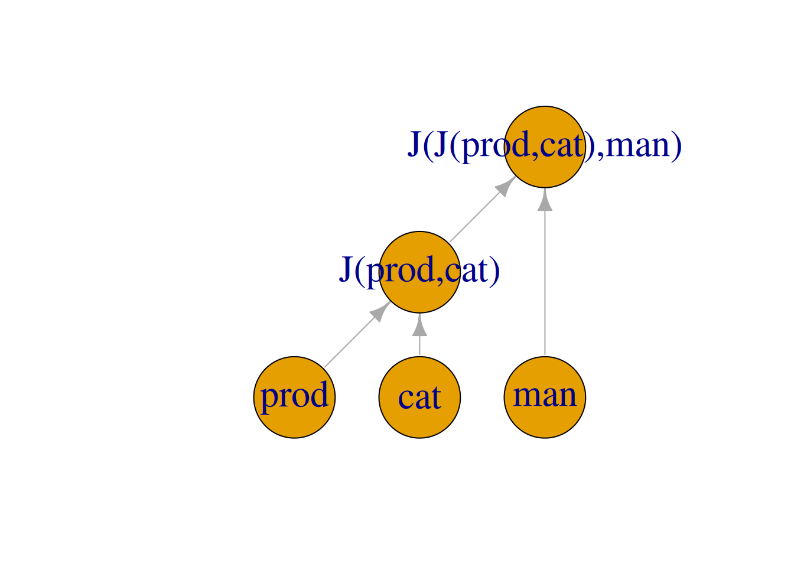
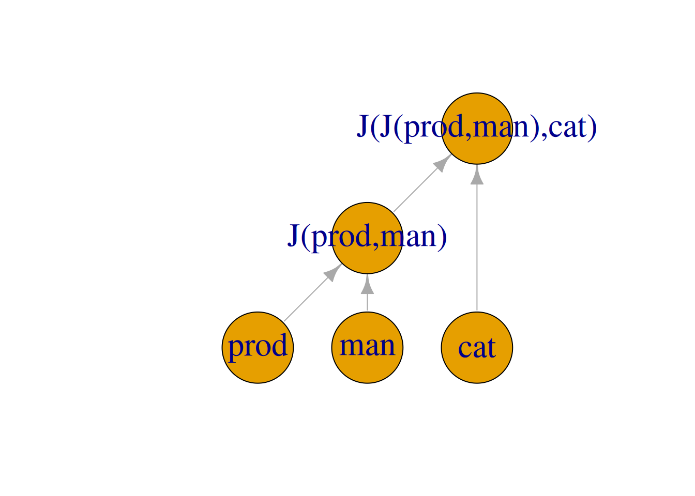
Локальный план обработки определяется как граф запроса, в котором все отношения — это листовые узлы, а все операции (например, соединение, проекция и выборка) — внутренние узлы. Поскольку рассматривается только операция соединения, локальный план обработки для запроса можно представить в виде бинарного дерева соединений, листьями которого являются все отношения, а внутренними узлами — операции соединения. Рёбра в таком дереве маркируются предикатами соединения и селективностью соединения. Предикат соединения сопоставляет кортежи из декартова произведения смежных узлов в значение false или true в зависимости от того, должен ли кортеж включаться в результат. Селективность соединения — это отношение количества включенных кортежей к общему количеству кортежей.
Стоимости двух деревьев соединения также различаются, хотя структура одинаковая, потому что порядок соединения отношений разный. Левое дерево в имеет вид \(((cat \bowtie prod) \bowtie man)\), когда правое дерево – \(((cat \bowtie man) \bowtie prod)\). Предположим, что размеры таблиц \(cat\), \(man\) и \(prod\) равны 20, 30 и 100 соответственно. Стоимость левого дерева рассчитывается следующим образом. Сначала вычисляется стоимость \((cat \bowtie prod)\) как \(\|cat\| \cdot \|prod\|=20 \cdot 100=2000\). Если результаты \((cat \bowtie prod)\) содержим 50 кортежей, то стоимость \(((cat \bowtie prod) \bowtie man)\) будет \(50 \cdot 30=1500\). Итак, общая стоимость: \(2000+1500=3500\). Однако, стоимость правого дерева в будет отличаться. Стоимость \((cat \bowtie man)\) равна \(\|cat\| \cdot \|man\|=20 \cdot 30=600\). Если результат \((cat \bowtie man)\) содержит 30 кортежей, то стоимость \(((cat \bowtie man) \bowtie prod)\) будет равна \(30 \cdot 100=3000\), и, следовательно общая стоимость равна \(600 + 3000 = 3500\).
Таким образом для определения оптимального локального плана выполнения запроса требуется решить. NP полную задачу. Данная задача далее рассматриваться не будет в связи с подходом к построению глобального плана указанного в пункте Глава 33.8.
33.2 Глобальная оптимизация нескольких запросов
Дано множество планов обработки для запроса. Цель оптимизации запроса — найти такой план обработки, который обеспечивает наименьшую стоимость выполнения запроса. Глобальный план выполнения получается путём объединения локальных планов. Таким образом два запроса могут быть объединены по общим узлам. Рассмотрим следующие 3 запроса которые попарно используют 4 таблицы (T1, T2, T3, T4)
SELECT * FROM T1 JOIN T2, T3
SELECT * FROM T1 JOIN T2, T4
SELECT * FROM T2 JOIN T3, T4Их локальные планы выполнения
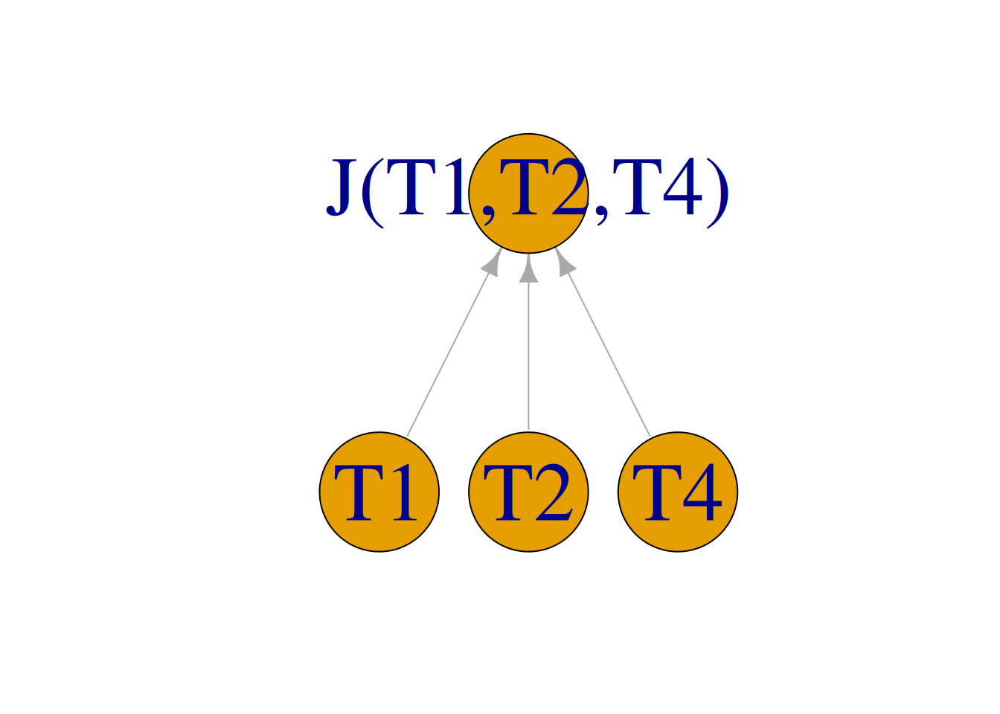
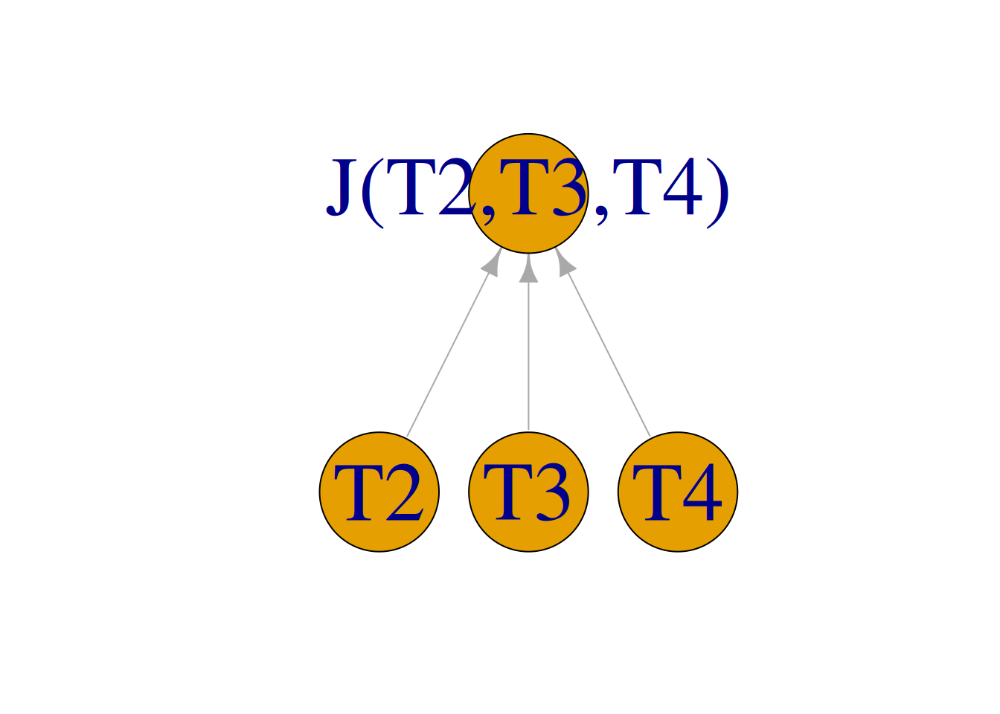
При объединении нескольких планов обработки запросов, то есть нескольких деревьев соединений, формируемый глобальный план обработки должен представлять собой ориентированный ациклический граф (DAG), а не дерево. Вершины Q1, Q2 и Q3 обозначают результирующие таблицы запросов.
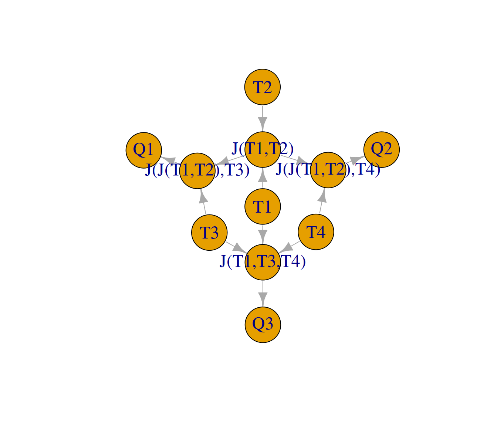
При объединении в один глобальный план возникает несколько вариантов промежуточных объединений, например JOIN(T1,T2) или JOIN(T2,T3). В общем случае объединение локально оптимальных планов не обязательно приводит к глобально оптимальному плану. Следовательно, мы не можем найти глобально оптимальный план, просто объединив локально оптимальные планы. Выбор оптимального глобального плана так-же является NP полной задачей и рассматриваться не будет в связи с подходом к построению глобального плана указанного в пункте Глава 33.8.
33.3 Выбор материализованных представления
Основная задача – это выбор представлений для материализации таким образом, чтобы минимизировать стоимость обработки запросов и поддержки представлений для всех узлов в глобальном плане обработки. Простой подход — использовать полный перебор, чтобы найти оптимальный набор материализованных представлений для заданного множества запросов. Однако этот подход становится непрактичным при большом пространстве поиска. Задача выбора материализованных представлений является NP-трудной. Для ускорения получения результата необходимо использовать эволюционные алгоритмы, чтобы сократить пространство поиска Глава 33.9. Для предварительного сокращения пространства поиска имеет смысл материализовать только совсместно используемые промежуточные узлы.
33.4 Модель запроса
Рассмотрим запрос выборки на языке SQL: “Товары дороже средней цены”
SELECT products.name, price_change.price
FROM products
JOIN price_change ON products.id = price_change.product_id
WHERE price_change.price > (SELECT AVG(price_change.price) FROM price_change)из таблиц
erDiagram
products ||--|{ price_change : has
price_change {
int id
int product_id
real price
date change_date
}
products {
int id
int category_id
int manufacturer_id
text name
real price
}
Разделим его на подзапрос, вычисляющий среднюю цену average_price
SELECT AVG(price_change.price)
FROM price_changeи главный запрос
SELECT products.name, price_change.price
FROM products
JOIN price_change ON products.id = price_change.product_id
WHERE price_change.price > average_priceВ задаче будет рассматриваться максимально упрощенное подмножество операторов языка SQL. Рассмотрим, как предстваить этот запрос в виде графа вычислений.
С каждым вычислительным узлом связана таблица, эта таблица передаётся в главном аргументе (связь val)
33.4.1 JOIN
Рассмотрим часть запроса
FROM products
JOIN price_change ON products.id = price_change.product_idПредставленную в yaml
body:
join:
- products
- price_changeОперация JOIN выполняется в два этапа, сначала создаётся полное декартово произведение двух таблиц, далее записи фильтруются по условию соединения в операции WHERE Глава 33.4.2. У операции JOIN аргументы (таблицы) равнозначны, что отличает её от других функций, которые имеют один главный аргумент (val), к которому они применяют другие свои аргументы arg. Для однотипной обработки введём фиктивный главный аргумент JOIN EMPTY — JE.
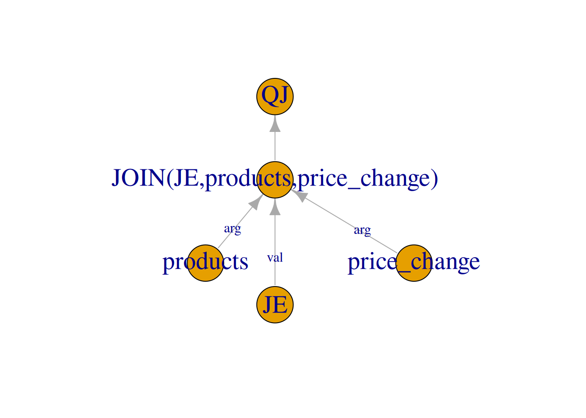
На текущий момент граф выглядит следующим образом:
| name | fun |
|---|---|
| JE | table |
| products | table |
| price_change | table |
| JOIN(JE,products,price_change) | JOIN |
| QJ | query |
| from | to | label |
|---|---|---|
| products | JOIN(JE,products,price_change) | arg |
| price_change | JOIN(JE,products,price_change) | arg |
| JE | JOIN(JE,products,price_change) | val |
| JOIN(JE,products,price_change) | QJ | NA |
Соответственно на данный момент результатом операции будет таблица, состоящая из \(100 \cdot 150 = 15000\) строк и следующих столбцов
| col | type |
|---|---|
| products.id | INTEGER |
| products.name | TEXT |
| products.category_id | INTEGER |
| products.manufacturer_id | INTEGER |
| products.price | REAL |
| price_change.id | INTEGER |
| price_change.product_id | INTEGER |
| price_change.price | REAL |
| price_change.change_date | DATE |
Уведомление
Считается, что у таблицы JoinEmpty (JE) нет столбцов и одна строка.
33.4.2 WHERE
Добавим к запросу условие отбора, его главынм аргументом val будет таблица, полученная на предыдущем шаге в JOIN, а аргументами arg имена условий
WHERE price_change.new_price > average_price AND
products.id = price_change.product_idПредставленную в yaml
body:
where:
- name: products.id = price_change.product_id
sample: 0.3
- name: price_change.new_price > average_price
sample: 0.3
depends: average_price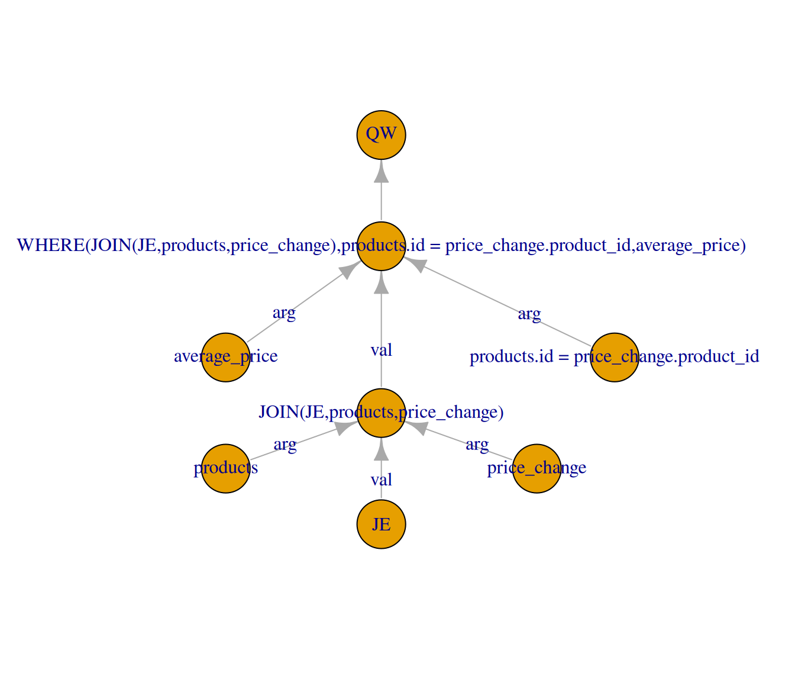
Заметим, что условие price_change.new_price > average_price зависит от подзапроса average_price, поэтому и назовём его так-же для удобства.
В граф были добавлены
| name | fun |
|---|---|
| products.id = price_change.product_id | condition |
| average_price | condition |
| WHERE(JOIN(JE,products,price_change),products.id = price_change.product_id,average_price) | WHERE |
| QW | query |
| from | to | label |
|---|---|---|
| products.id = price_change.product_id | WHERE(JOIN(JE,products,price_change),products.id = price_change.product_id,average_price) | arg |
| average_price | WHERE(JOIN(JE,products,price_change),products.id = price_change.product_id,average_price) | arg |
| JOIN(JE,products,price_change) | WHERE(JOIN(JE,products,price_change),products.id = price_change.product_id,average_price) | val |
| WHERE(JOIN(JE,products,price_change),products.id = price_change.product_id,average_price) | QW | NA |
Так как оба условия имеют селективность \(0.3\), то общее число строк станет \(15000 \cdot {0.3}^2=1350\), а столбцы останутся всё те же.
33.4.3 SELECT
Главным аргументом запроса val будет таблица полученная на предыдущем шаге, а аргументами arg будут полные названия столбцов
SELECT products.product_name, price_change.new_priceПредставленную в yaml
body:
select:
- products.product_name
- price_change.new_price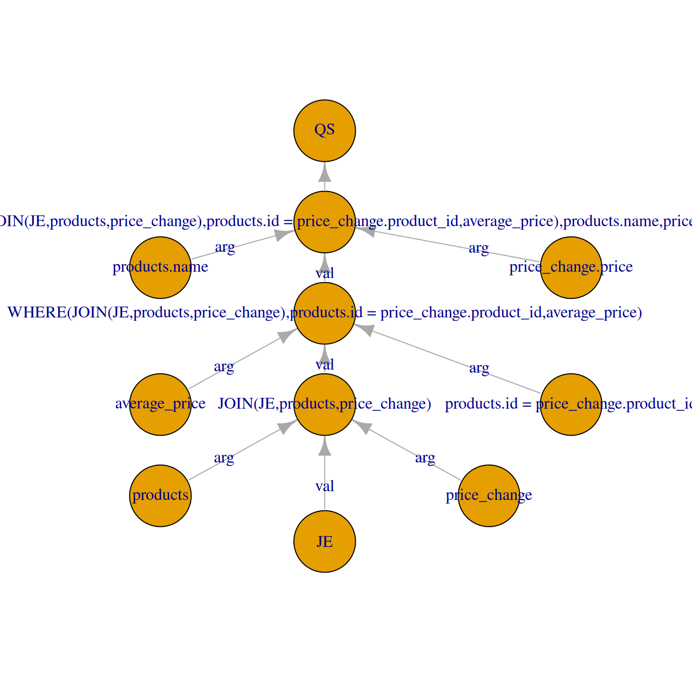
В граф были добавлены
| name | fun |
|---|---|
| products.name | column |
| price_change.price | column |
| SELECT(WHERE(JOIN(JE,products,price_change),products.id = price_change.product_id,average_price),products.name,price_change.price) | SELECT |
| QS | query |
| from | to | label |
|---|---|---|
| products.name | SELECT(WHERE(JOIN(JE,products,price_change),products.id = price_change.product_id,average_price),products.name,price_change.price) | arg |
| price_change.price | SELECT(WHERE(JOIN(JE,products,price_change),products.id = price_change.product_id,average_price),products.name,price_change.price) | arg |
| WHERE(JOIN(JE,products,price_change),products.id = price_change.product_id,average_price) | SELECT(WHERE(JOIN(JE,products,price_change),products.id = price_change.product_id,average_price),products.name,price_change.price) | val |
| SELECT(WHERE(JOIN(JE,products,price_change),products.id = price_change.product_id,average_price),products.name,price_change.price) | QS | NA |
В этом случае в таблице останутся только два столбца
| col | type |
|---|---|
| products.name | TEXT |
| price_change.price | REAL |
33.4.4 AGGREGATE
Возможны следующие функции агрегации
- IDENTITY
- COUNT
- SUM
- MAX
- AVG
- MIN
- DISTINCT
Оператор IDENTITY введён для обобщенной обработки и не изменяет текущий столбец. Продемонстрируем применение функции агрегации на подзапросе.
SELECT AVG(price_change.price_change)
FROM price_changesubqueries:
body:
from: price_change
select:
- price_change.new_price
aggregate:
- AVG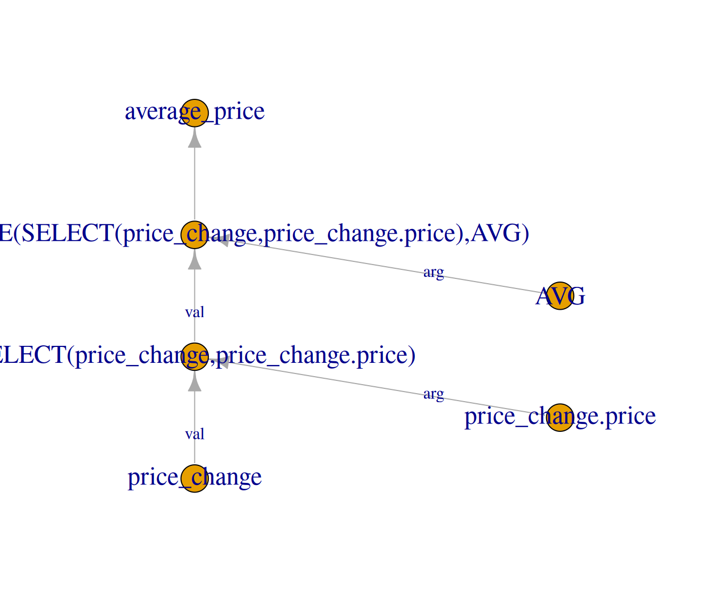
33.4.5 Полный граф вычислений
Объединив главный запрос и подзапрос получаем следующий граф вычислений. Узел обозначающий запрос определяется по имени из yaml файла
queries:
name: products_above_avg_price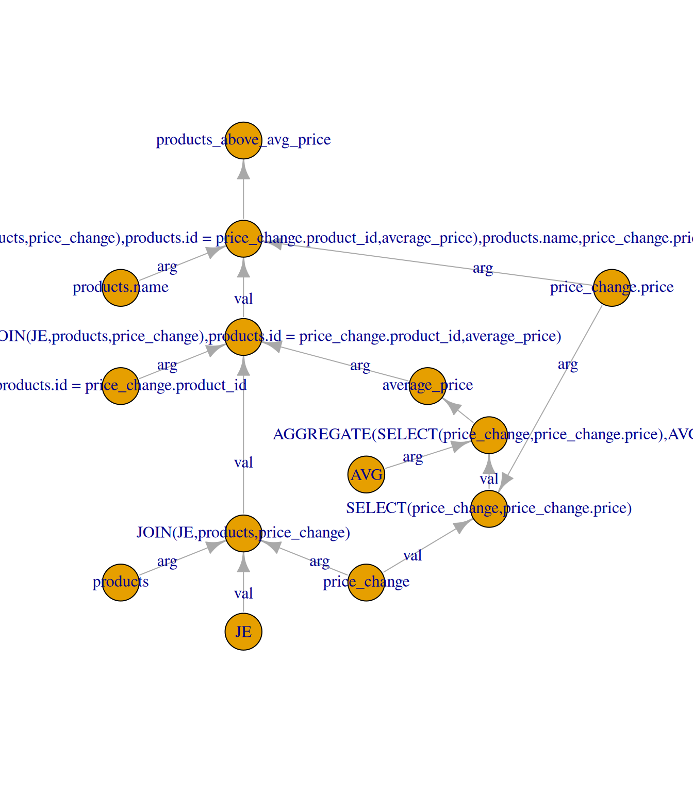
33.4.6 Представление в yaml
Структура таблиц определена в файле database.yaml
- name: products
lines: 100
freq: 8
columns:
- name: id
type: INTEGER
- name: name
type: TEXT
- name: category_id
type: INTEGER
- name: manufacturer_id
type: INTEGER
- name: price
type: REAL
- name: price_change
lines: 150
freq: 5
columns:
- name: id
type: INTEGER
- name: product_id
type: INTEGER
- name: price
type: REAL
- name: change_date
type: DATEА рассмотренный запрос сохраняется в виде yaml в файлу queries.yaml
queries:
- desc: Товары дороже средней цены
name: products_above_avg_price
freq: 9
body:
join:
- products
- price_change
where:
- name: products.id = price_change.product_id
sample: 0.4
- name: price_change.price > average_price
sample: 0.3
depends: average_price
select:
- products.name
- price_change.price
subqueries:
- desc: Вычисление средней цены
name: average_price
body:
from: price_change
select:
- price_change.price
aggregate:
- AVG33.5 Стоимость обслуживания
Каждый промежуточных узел характеризуется стоимость обслуживания, которая складывается из стоимости хранения \(\mathrm{store}\) и стоимости обновления \(\mathrm{maint}\)
\[ \mathrm{main} = \mathrm{store} \cdot \mathrm{maint} \]
| type | size |
|---|---|
| INTEGER | 4 |
| REAL | 8 |
| DATE | 4 |
| TEXT | 100 |
Стоимость хранения зависит от размера таблицы
\[ \mathrm{store} = n \cdot \sum s_{col,i} \]
где \(n\) число строк в промежуточной таблице, \(s_{col,i}\) – размер типа данных \(i\)-того столбца.
Для промежуточных узлов вычислений, рассмотренных выше, стоимость приведена в таблице
| fun | num_col | size |
|---|---|---|
| JOIN | 9 | 2100000 |
| WHERE | 9 | 189000 |
| SELECT | 2 | 145800 |
Стоимость обновления зависит от частоты запросов к базовым таблицам материализованного представления
\[ \mathrm{upd} = \mathrm{size} \cdot \sum f_{u,i} \]
где \(f_i\) – частота запросов \(i\)-той базовой таблице этого представления. Частота запросов \(f_u\) выражается параметром freq файла database.yaml.
33.6 Стоимость вычисления запроса
Все узлы имеют свою стоимость вычисления \(\mathrm{comp}\). Если узел является листом (таблица, независимое условие, столбец), то стоимость его вычисления равна нулю. Стоимость вычисления запроса определяется стоимостью вычисления его узлов поиском в глубину. Для сокращения вычислительных затрат в качестве кандидатов на материализацию будут рассматриваться только совместно используемые промежуточные узлы. Если узел выбран как материализованный, то стоимость его вычисления учитывается только один раз в общей стоимости вычисления всех запросов.
Итоговая стоимость вычисления запроса также зависит от его частоты \(f_{q}\), которая приведена в файле queries.yaml параметром freq
Стоимости вычисления функциональных узлов приведены ниже. За \(n\) будем принимать число строк в итоговой таблице данного узла.
33.6.1 JOIN
Для JOIN применяется алгоритм хеш-соединения, поэтому стоимость операции оценивается как
\[ n \log{n} \]
33.6.2 WHERE
Условие применяется последовательно к каждой строке для отбора, поэтому стоимость вычисления пропорциональна количеству условий \(k\) и числу строк \(n\)
\[ n \cdot k \]
Аргументы операции WHERE могут зависеть от подзапросов, поэтому к стоимости вычисления добавляется ещё и стоимость вычисления подзапросов.
33.6.3 SELECT
Операция SELECT имеет стоимость \(\log{n}\) от числа строк \(n\).
33.6.4 AGGREGATE
В примере рассматриваются следующие функции агрегации
| Функция | Стоимость |
|---|---|
| IDENTITY | \(0\) |
| COUNT | \(1\) |
| SUM | \(n\) |
| MAX | \(n\) |
| AVG | \(n\) |
| MIN | \(n\) |
| DISTINCT | \(n \log{n}\) |
Совет
Библиотека igraph предоставляет гибкие и эффективные функции выбора подграфов, листьев и вершин по условию Глава 33.10.
33.7 Целевая функция
Теперь мы можем рассчитать затраты для различных стратегий материализации представлений. Предположим, что некоторые промежуточные узлы материализованы. Для каждого запроса стоимость обработки равна произведению частоты выполнения запроса на стоимость доступа к запросу от материализованного узла (или узлов). Стоимость поддержки материализованного представления – это стоимость его построения (в данном случае предполагается, что при каждом обновлении задействованных базовых отношений представление полностью пересчитывается). Общая стоимость – это сумма всех затрат на выполнение запросов и затрат на поддержку представлений. Цель – найти такой набор узлов для материализации, при котором общая стоимость минимальна.
Пусть \(М\) – набор материализованных представлений, \(C_{q_i}(M)\) – стоимость вычислений \(q_i\) из набора материализованных представлений \(M\), а \(C_m(V)\) – стоимость обслуживания при материализации \(v\). Тогда общая стоимость обработки запроса \(\sum_{q_i\in Q} f_{q_i} C_{q_i}(M)\), а общая стоимость обслуживания \(\sum_{v \in M} C_m(v)\). Общая стоимость материализованных представлений \(M\) определяется формулой:
\[ \sum_{q_i \in Q} C_{q_i} f_{q_i}(M) + \sum_{v \in M} f_u C_m(v) \]
Для заданного глобального плана обработки минимизировать указанную общую стоимость.
33.8 Построение глобального плана запросов
Глобальный план запросов строился из следующих предположений:
- Все узлы, которые имеют одинаковый главный аргумент
valи пересекающиеся аргументыargs - Сначала создаются (обрабатываются) узлы, имеющие наибольшее количество общих аргументов
- Затем узлы, которые имеют меньше общих аргументов, но больше улов используют эти аргументы совместно
- Процесс повторяется до тех пор, пока таких узлов не останется
В итоге получается один из возможных глобальных планов
IGRAPH da14b4a DN-- 146 220 --
+ attr: name (v/c), fun (v/c), id (v/c), label (e/c)
+ edges from da14b4a (vertex names):
[1] price_change.price ->SELECT(price_change,price_change.price)
[2] price_change ->SELECT(price_change,price_change.price)
[3] AVG ->AGGREGATE(SELECT(price_change,price_change.price),AVG)
[4] SELECT(price_change,price_change.price) ->AGGREGATE(SELECT(price_change,price_change.price),AVG)
[5] AGGREGATE(SELECT(price_change,price_change.price),AVG)->average_price
+ ... omitted several edgesДля наглядной визуализации определим цвета базовых узлов
| fun | color |
|---|---|
| table | blue |
| condition | green |
| column | magenta |
| aggregate | orange |
| query | yellow |
и отобразим на графе
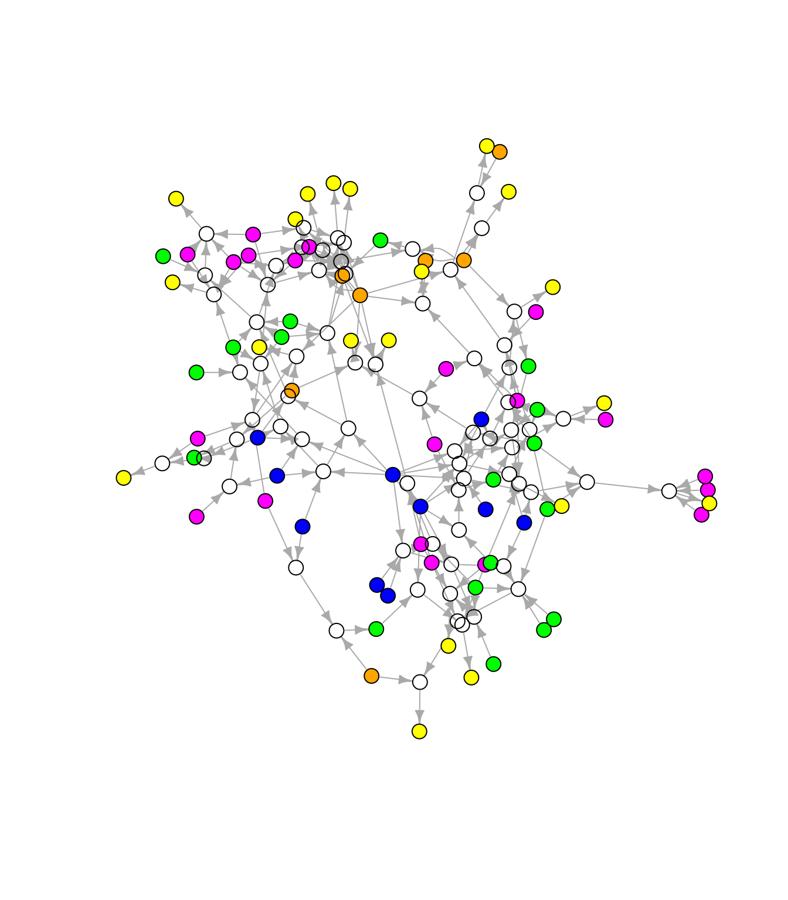
Красным отмечены промежуточные совместно используемые узлы
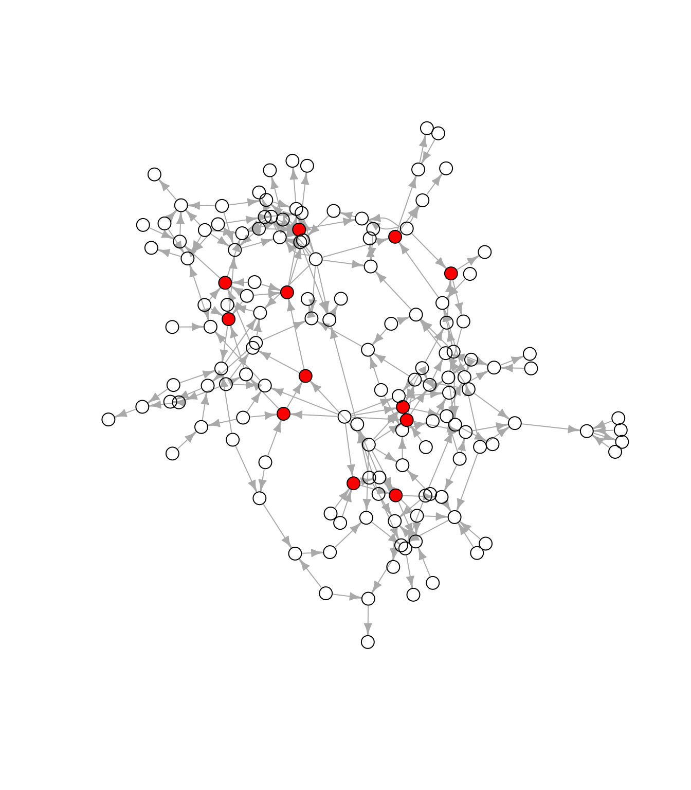
Граф определяется в следующих файлах
33.9 Решение генетическим алгоритмом
Таким образом получается, что целевая функция зависит от набора материализуемых представлений (промежуточных узлов). Её структуру можно представить с помощью битовой строки, где позиции (индекс) это номер представления, а значение – решение о его материализации.
https://loginom.ru/blog/ga-math
Совет
Задача оптимизации битовых строк является широко распространённой. Рекомендуется использовать готовый пакет, например GA::ga().
33.10 Запросы к графу
33.10.1 Выбор поддерева
33.10.2 Выбор вершин
Индексация igraph::V(g)[] позволяет использовать атрибуты вершин в запросе
```{r}
igraph::V(g)[fun == 'JOIN']
```Также этот запрос можно комбинировать с логическим вектором
```{r}
igraph::V(g)[fun == 'JOIN' & igraph::degree(g, mode = 'out')]
```33.10.3 Степень вершины
Чтобы определить количество входящих и выходящих рёбер из вершины полезна функция igraph::degree().
33.10.4 Выбор рёбер
igraph::E(g)[] полезными будут аргументы to и from
```{r}
E(g)[.to(),from()]
```